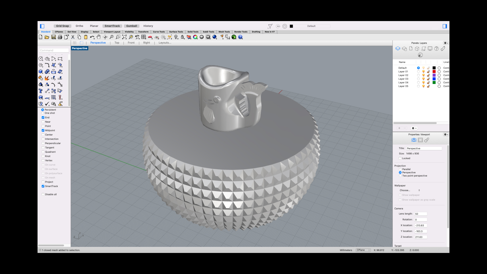

Idea
Gantry designs
I discovered Gantri, a lighting company based in San Francisco, that uses 3d printing exclusively to manutfacture their lamps.
They partner with independent product designers and studioes to create minimalist Scandinavian-inspired designs.
With this assignment, I was most excited about the idea of designing and making things that I would have otherwise bought from somewhere else – objects that were both functional and beautiful.
Process
I found this great ice cream print on Thingiverse and decided to recreate this as a mold.
I brought the ice cream STL into Rhino and sliced it in half using "BooleanMeshSplit".
Then I used a bunch of Boolean commands to combine and subtract surfaces to create the mold for molds.
To make it easier for me to remove the silicone once it is set in my mold, I decided to separate the box structure of the mold into two parts: 1. The flat surface with the shape I want to cast 2. The container that the flat surface will sit in. It has a hole in the back for me to press into to take out my mold.
The ice cream mesh that I had downloaded from Thingiverse had some issues with non-manifold edges. For that reason, when I converted it into a polysurface using the "MeshtoNurb" command, I wasn't able to BooleanUnion one half of the ice cream object to its base container.
However, I wondered if Cura wouldn't see that as an error to print since it was still a closed polysurface. I decided to scale down my model by 50% to do a quick test print.
It took about an hour to print the model. The one half of the mold without the non-manifold edge issue printed well. And luckily it fit nicely into the mold container.
Not surprisingly, the one half of the ice cream that did have the non-manifold edge issue did not print as well.
My plan is to recreate the cone shape in Rhino (the ice cream part of the shape didn't have any issues) instead of going through the tedious process of trying to repair the original mesh
Special Thanks
As always, a HUGE thank you to Junchao! For your availability and responsiveness and for teaching me about the "Contour" command in Rhino. I always learn something new everytime I talk to you.
Thanks to Sara Cagle for her friendship and support throughout the week and for sharing amazing learning resources.